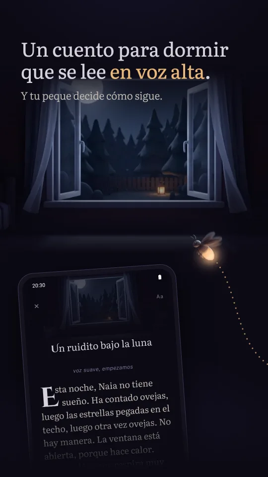
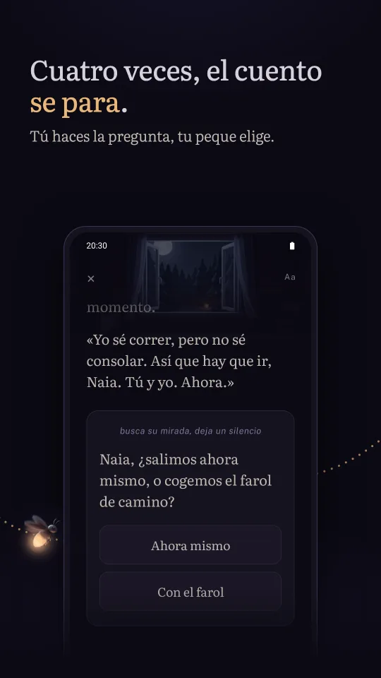
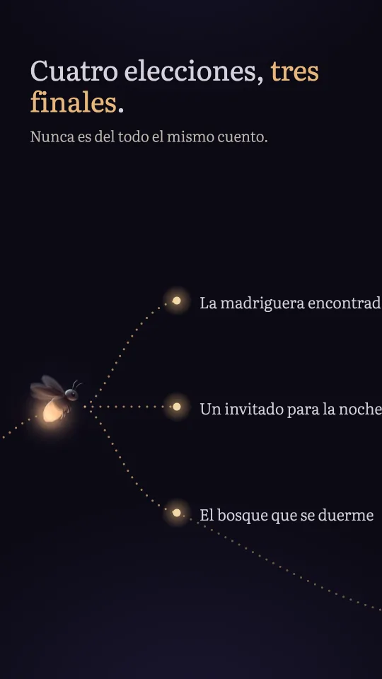
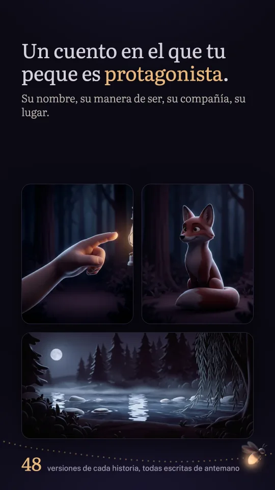
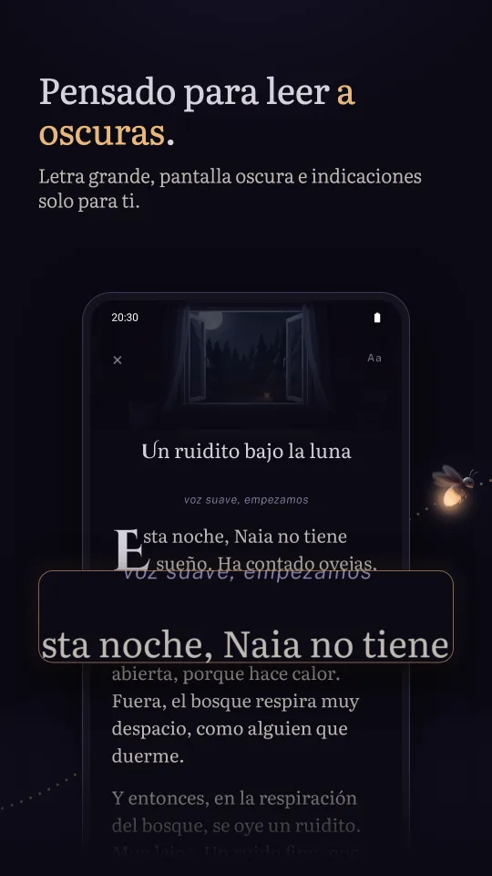
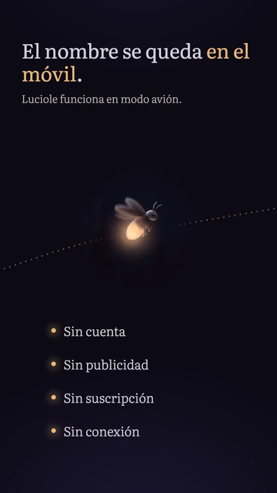
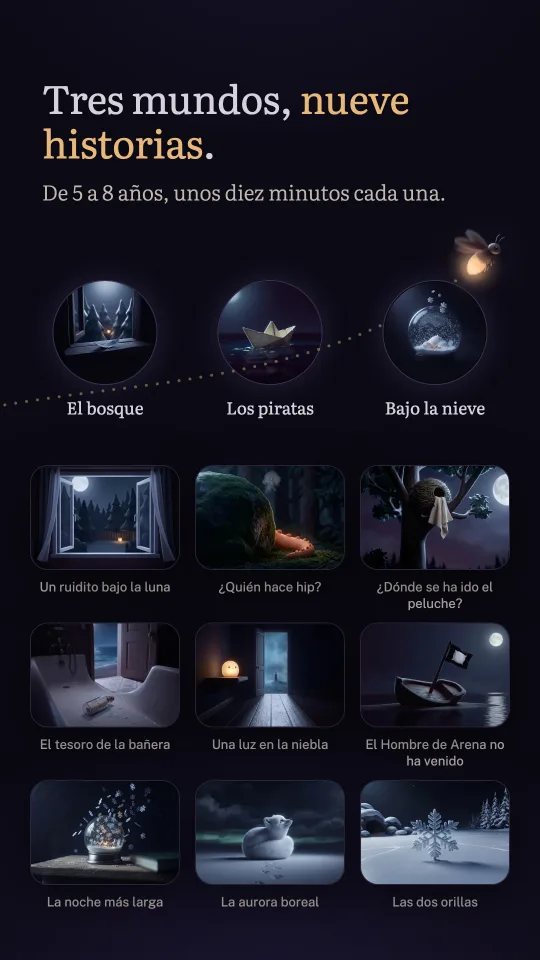

Un cuento que se lee en voz alta, y tu peque decide
-
Tú lees, tu peque decide
Tú tienes el móvil y lees. Cuatro veces, el cuento se para en una pregunta que le haces a tu peque. Tu peque contesta, tú tocas la elección, y la historia toma otro camino.
-
Tres finales
Las elecciones cambian de verdad lo que viene después. De una noche a otra, nunca es del todo el mismo cuento.
-
Su nombre, su manera de ser, su compañía, su lugar
Valiente, curioso, travieso o tranquilo; una compañía entre cuatro, del zorro al loro o al pingüino; un lugar entre tres, del río al barco hundido o a la banquisa. Cuarenta y ocho versiones de cada historia, escritas, no montadas por una máquina.
-
Pensado para leer a oscuras
Pantalla oscura, letras color crema, una letra grande que ajustas con un gesto. El cuento se lee de un tirón, sin pasar páginas, y cada pregunta aparece en una tarjeta justo cuando toca hacerla. Las indicaciones para ti van en cursiva y no se leen en voz alta.
-
Tres mundos, nueve historias
El bosque está incluido, con sus tres historias; Los piratas y Bajo la nieve, tres historias cada uno, se desbloquean una sola vez y para siempre en Google Play. Para niños y niñas de cinco a ocho años, de ocho a diez minutos de lectura cada una.
Cómo funciona
El nombre de tu peque, y luego tres imágenes para elegir: cómo es esta noche, quién viene también, dónde pasa todo.
Tú lees en voz alta, de un tirón, sin pasar páginas.
En cada pregunta, tu peque decide. Tú tocas la elección y sigues leyendo.
Imágenes







Sin cuenta, sin publicidad
Luciole no recoge, no envía y no comparte ningún dato personal. Sin cuenta, sin conexión, sin publicidad, sin suscripción: los mundos se compran una sola vez en Google Play, y la aplicación funciona en modo avión.
En el móvil guarda el nombre de tu peque y el pronombre elegido, las elecciones de antes de cada lectura, el tamaño de la letra y el historial de los cuentos leídos. Si desinstalas la aplicación, se borra todo.
Preguntas
¿Puede usarla mi peque a solas?
No está pensada para eso. Luciole es un ritual de dos: la persona adulta tiene el móvil y lee en voz alta, y tu peque escucha y decide. No hay nada que leer para tu peque, y en la pantalla no se mueve nada.
¿Para qué edad?
De cinco a ocho años. El vocabulario está pensado para un niño o una niña de seis años que escucha, sin necesidad de saber leer.
¿Cuántas historias hay?
Nueve, en tres mundos. El bosque está incluido: «Un ruidito bajo la luna», «¿Quién hace hip?» y «¿Dónde se ha ido el peluche?». Los piratas y Bajo la nieve se desbloquean cada uno con una sola compra, sin suscripción. Cada historia existe en cuarenta y ocho versiones, según el protagonista, la compañía y el lugar elegidos, con tres finales, en español, alemán, inglés o francés. No hay nada que descargar: todo está en el móvil.
¿Hace falta conexión?
Para leer, nunca: la aplicación funciona en modo avión. Solo la compra de un mundo pasa por Google Play y necesita entonces conexión.
¿Podemos seguir un cuento donde lo dejamos?
Sí. Si tu peque se duerme a mitad, la pantalla de inicio te propone seguir leyendo donde lo dejasteis.